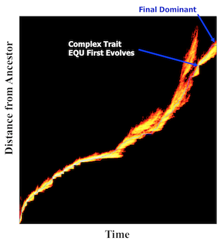

(Titles linked to PDFs when available)
PEER-REVIEWED PUBLICATIONS81. Ostrowski EA, Ofria C, Lenski RE (2015) Genetically integrated traits and rugged adaptive landscapes in digital organisms, BMC Evolutionary Biology, 15(1):83.80. Zaman L, Meyer JR, Devengam S, Bryson DM, Lenski RE, and Ofria C. (2014) Coevolution Drives the Emergence of Complex Traits and Promotes Evolvability, PLoS Biology, 12.12: e1002023. 79. Biswas R, Ofria C, Bryson DM, and Wagner AP (2014) Causes vs Benefits in the Evolution of Prey Grouping, ALife 14: The Fourteenth Conference on the Synthesis and Simulation of Living Systems, pp. 641-648. 78. Goldsby HJ, Knoester DB, Kerr B, and Ofria C (2014) The Effect of Conflicting Pressures on the Evolution of Division of Labor, PLoS ONE, 9(8), e102713. 77. Johnson AE, Goldsby HJ, Goings S, and Ofria C (2014) The evolution of kin inclusivity levels, Proceedings of the 2014 conference on Genetic and Evolutionary Computation. 76. Bryson DM, Wagner AP, and Ofria C (2014) There and back again: gene processing hardware for the evolution and robotic deployment of robust navigation strategies, Proceedings of the 2014 conference on Genetic and Evolutionary Computation. 75. Goldsby HJ, Knoester DB, Ofria C, and Kerr B (2014) The Evolutionary Origin of Somatic Cells under the Dirty Work Hypothesis, PLoS Biology, 12(5), e1001858. 74. Bryson DM and Ofria C (2013) Understanding Evolutionary Potential in Virtual CPU Instruction Set Architectures, PLoS ONE 73. Covert AW, Lenski RE, Wilke CO, and Ofria C (2013) Experiments on the role of deleterious mutations as stepping stones in adaptive evolution, Proceedings of the National Academy of Sciences, 110(34), E3171-E3178 72. Taghizadeh M, Micinski K, Biswas S, Ofria C, and Torng E (2013) Distributed Cooperative Caching in Social Wireless Networks, IEEE Transactions on Mobile Computing, 12(6):1037-1053 71. Grabowski LA, Bryson DM, Dyer FC, Pennock RT, and Ofria C (2013) A Case Study of the De Novo Evolution of a Complex Odometric Behavior in Digital Organisms, PLoS ONE 70. Fortuna MA, Zaman L, Wagner AP, and Ofria C (2013) Evolving Digital Ecological Networks, PLoS Computational Biology 69. Chandler CH, Ofria C, and Dworkin I (2012) Runaway Sexual Selection Leads to Good Genes, Evolution. 68. Goldsby H, Dornhaus A, Kerr B, and Ofria C (2012) Task Switching Costs Promote the Evolution of Division of Labor and Shifts in Individuality, Proc. Natl. Acad. Sci. USA, 109(34):13686-13691. 67. Clune J, Pennock RT, Ofria C, and Lenski RE (2012) Ontogeny Tends to Recapitulate Phylogeny in Digital Organisms, The American Naturalist, 180:E54-E63. 66. Goings S, Goldsby HJ, Cheng BHC, and Ofria C (2012) An Ecology-based Evolutionary Algorithm to Evolve Solutions to Complex Problems, Proceedings of the 13th International Conference for Artificial Life, East Lansing, MI. 65. Bryson DM, and Ofria C (2012) Digital Evolution Demonstrates Surprising Robustness to Poor Design Decisions, Proceedings of the 13th International Conference for Artificial Life, East Lansing, MI. 64. Goldsby H, Serra N, Dyer F, Kerr B, and Ofria C (2012) The Evolution of Temporal Polyethism, Proceedings of the 13th International Conference for Artificial Life, East Lansing, MI. 63. Zaman L, Ofria C, and Lenski RE (2012) Finger-painting Fitness Landscapes: An Interactive Tool for Exploring Complex Evolutionary Dynamics, Proceedings of the 13th International Conference for Artificial Life, East Lansing, MI. 62. Walker B and Ofria C (2012) Evolutionary Potential is Maximized at Intermediate Diversity Levels, Proceedings of the 13th International Conference for Artificial Life, East Lansing, MI. 61. Yedid G, Stredwick J, Ofria C, and Agapow (2012) A Comparison of the Effects of Random and Selective Mass Extinctions on Erosion of Evolutionary History in Communities of Digital Organisms, PLoS ONE. 60. Grabowski LM, Bryson DM, Dyer FC, Pennock RT, and Ofria C (2011) Clever Creatures: Case Studies of Evolved Digital Organisms, Proceedings of the Proceedings of the 2011 European Conference on Artificial Life. 59. Connelly BD, Zaman L, Ofria C, and McKinley PK (2011) Modeling the Evolutionary Dynamics of Plasmids in Spatial Populations, Proceedings of the 2011 Genetic and Evolutionary Computation Conference. 58. Zaman L, Devangam S, and Ofria C (2011) Rapid Host-Parasite Co-Evolution Drives the Production and Maintenance of Diversity in Digital Organisms, Proceedings of the 2011 Genetic and Evolutionary Computation Conference. 57. Clune J, Stanley KO, Pennock RT, and Ofria C (2011) On the Performance of Indirect Encoding Across the Continuum of Regularity, IEEE Transactions on Evolutionary Computation, 15(3):346-367. 56. Clune J, Goldsby HJ, Ofria C, and Pennock RT (2011) Selective Pressures for Accurate Altruism Targeting: Empirical Support for Difficult-to-Test Aspects of Inclusive Fitness Theory, Proceedings of the Royal Society of London, 278(1706):666-674. 55. Strelioff CC, Ofria C, and Lenski RE (2010) Evolutionary Dynamics, epistatic interactions, and Biological Information, Journal of Theoretical Biology, 266(4):584-594. 54. Connelly BD, Zaman L, Ofria C, and McKinley PK (2010) Social Structure and the Maintenance of Biodiversity, The Proceedings of the 12th International Conference on Artificial Life, Odense, Denmark 53. Grabowski LM, Bryson DM, Dyer F, Pennock RT, Ofria C (2010) Early Evolution of Memory Usage in Digital Organisms, The Proceedings of the 12th International Conference on Artificial Life, Odense, Denmark. 52. Clune J, Beckmann BE, McKinley PK, and Ofria C (2010) Investigating Whether HyperNEAT Produces Modular Neural Networks, The Proceedings of the 2010 Genetic and Evolutionary Computation Conference, Pages 634-642. 51. Goldsby HJ, Knoester DB, and Ofria C (2010) Evolution of Division of Labor in Genetically Homogenous Groups, The Proceedings of the 2010 Genetic and Evolutionary Computation Conference, 50. Misevic D, Ofria C, and Lenski RE (2010) Experiments with Digital Organisms on the Origin and Maintenance of Sex in Changing Environments, Journal of Heredity, 101(supp 1):S46-54. doi:10.1093/jhered/esq017. 49. Clune J, Beckmann BE, Pennock RT, and Ofria C (2009) HybrID: A Hybridization of Indirect and Direct Encodings for Evolutionary Computation, Proceedings of the European Conference on Artificial Life (ECAL), 2009. Budapest, Hungary. 48. Goldsby H, Knoester DB, Clune J, McKinley PK, Ofria C (2009) The Evolution of Division of Labor, Proceedings of the European Conference on Artificial Life (ECAL), 2009. Budapest, Hungary. 47. Clune J, Pennock R, and Ofria C (2009) The Sensitivity of HyperNEAT to Different Geometric Representations of a Problem, Proceedings of the 2009 Genetic and Evolutionary Computation Conference. 46. Goldsby H, Goings S, Clune J, and Ofria C (2009) Problem Decomposition Using Indirect Reciprocity in Evolved Populations, Proceedings of the 2009 Genetic and Evolutionary Computation Conference. 45. Clune J, Beckmann B, Ofria C, and Pennock R (2009) Evolving coordinated quadruped gaits using the HyperNEAT generative encoding, Proceedings of the IEEE Congress on Evolutionary Computations, Special Session on Evolutionary Robotics. 44. Goings S and Ofria C (2009) Ecological Approaches to Diversity Maintenance in Evolutionary Algorithms, Proceedings of the IEEE Symposium on Artificial Life. 43. Beckmann B, Grabowski L, McKinley P, and Ofria C (2009) Applying Digital Evolution to the Design of Self-Adaptive Software, Proceedings of the IEEE Symposium on Artificial Life. 42. Elsberry W, Grabowski L, Ofria C, and Pennock R (2009) Cockroaches, Drunkards, and Climbers: Evolving Simple Movement Strategies Using Digital Organisms, Proceedings of the IEEE Symposium on Artificial Life. 41. Yedid G, Ofria C, and Lenski RE (2009) Selective Press Extinctions, but Not Random Pulse Extinctions, Cause Delayed Ecological Recovery in Communities of Digital Organisms, The American Naturalist. 173(4):E139-E154. 40. Clune J, Misevic D, Ofria C, Lenski RE, Elena SF, and Sanjuan R (2008) Natural Selection Fails to Optimize Mutation Rates for Long-Term Adaptation on Rugged Fitness Landscapes, PLoS Computational Biology, 4(9): e1000187. doi:10.1371/journal.pcbi.1000187 39. Yedid G, Ofria C, and Lenski RE (2008) Historical and Contingent Factors Affect Re-Evolution of a Complex Feature Lost During Mass Extinction in Communities of Digital Organisms, Journal of Evolutionary Biology, 21(5):1335-1357. 38. Ofria C, Huang W and Torng E. (2008) On the Gradual Evolution of Complexity and the Sudden Emergence of Complex Features, Artificial Life, 14(3) 255-263. doi:10.1162/artl.2008.14.3.14302 37. Clune J, Ofria C, and Pennock RT (2008) How Generative Encodings Fare on Less Regular Problems, Proceedings of the ACM Genetic and Evolutionary Computation Conference (GECCO-2008), Atlanta GA, July 2008, Pages 867-868. (abstract) https://doi.acm.org/10.1145/1389095.1389263 36. Grabowski LM, Elsberry WR, Pennock RT, and Ofria C. (2008) On the Evolution of Motility and Intelligent Tactic Response, Proceedings of the ACM Genetic and Evolutionary Computation Conference (GECCO-2008), Atlanta GA, July 2008, Pages 209-216. https://doi.acm.org/10.1145/1389095.1389129 35. Knoester DB, McKinley PK, and Ofria C. (2008) Cooperative Network Construction Using Digital Germlines, Proceedings of the ACM Genetic and Evolutionary Computation Conference (GECCO-2008), Atlanta GA, July 2008, Pages 217-224. 34. Beckmann B, McKinley PK, and Ofria C. (2008) Selection for Group-Level Efficiency Leads to Self-Regulation of Population Size, Proceedings of the ACM Genetic and Evolutionary Computation Conference (GECCO-2008), Atlanta GA, July 2008, Pages 185-192. 33. Beckmann B, Grabowski L, McKinley PK, and Ofria C. (2008) Autonomic Software Development Methodology Based on Darwinian Evolution, Proceedings of the 5th IEEE International Conference on Autonomic Computing, Chicago IL, June 2008. Page 203. (abstract) 32. Goldsby HC, Cheng BHC, McKinley PK, Knoester DB, and Ofria C. (2008) Digital Evolution of Behavioral Models for Autonomic Systems, Proceedings of the 5th IEEE International Conference on Autonomic Computing, Chicago IL, June 2008. Pages 86-96 (Best paper award). 31. McKinley PK, Cheng BHC, Ofria C, Knoester DB, Beckmann B, and Goldsby HC. (2008) Harnessing Digital Evolution, IEEE Computer, 41(1):54-63. 30. Clune J, Ofria C, and Pennock RT. (2007) Investigating the Emergence of Phenotypic Plasticity in Evolving Digital Organisms, Lecture Notes in Computer Science (Proceedings of the 2007 European Conference on Artificial Life), 4648:74-83. 29. Beckmann B, McKinley PK, and Ofria C. (2007b) Evolution of an Adaptive Sleep Response in Digital Organisms, Lecture Notes in Computer Science (Proceedings of the 2007 European Conference on Artificial Life), 4648:233-242. 28. Knoester DB, McKinley PK, Beckmann B, and Ofria C. (2007b) Directed Evolution of Communication and Cooperation in Digital Organisms, Lecture Notes in Computer Science (Proceedings of the 2007 European Conference on Artificial Life), 4648:384-394. 27. Beckmann BE, McKinley PK, Knoester DB, and Ofria C. (2007a) Evolution of Cooperative Information Gathering in Self-Replicating Digital Organisms, Proceedings of the First IEEE International Conference on Self-Adaptive and Self-Organizing Systems (SASO), Boston, Massachusetts, July 2007. Pages 65-76. 26. Knoester DB, McKinley PK, and Ofria C. (2007a) Using Group Selection to Evolve Leadership in Populations of Self-Replicating Digital Organisms, Proceedings of the 2007 Genetic and Evolutionary Computation Conference, London, England, July 2007. Pages 293-300. 25. Hang D, Torng E, Ofria C, and Schmidt TM. (2007) The Effect of Natural Selection on the Performance of Maximum Parsimony, BMC Evolutionary Biology, 7:94. 24. McKinley PK, Cheng BHC, and Ofria C. (2007) Applying Digital Evolution to the Design of Self-Adaptive ULS Systems (position paper), Proceedings of the Workshop Software Engineering for Adaptive and Self-Managing Systems, with ICSE 2007, Minneapolis, Minnesota, May 2007. 23. Goldsby HJ, Knoester DB, Cheng BHC, McKinley PK, and Ofria C. (2007) Digitally Evolving Models for Dynamically Adaptive Systems, Proceedings of the Workshop Software Engineering for Adaptive and Self-Managing Systems, with ICSE 2007, Minneapolis, Minnesota, May 2007. 22. Elena SF, Wilke CO, Ofria C, and Lenski RE. (2007) Effects of population size and mutation rate on the evolution of mutational robustness, Evolution, 61(3):666-674. 21. Ostrowski E, Ofria C, and Lenski RE (2007) Ecological specialization and adaptive decay in digital organisms, The American Naturalist, 169:E1-E20. 20. Lenski RE, Barrick JE, Ofria C (2006) Balancing Robustness and Evolvability, PLoS Biology, 4(12):e428. 19. Rupp M, Torng E, and Ofria C (2006) The evolution of novel body types under differing selective pressures in digital organisms, Proceedings of the Tenth International Conference on Artificial Life, p268-274, Bloomington IN. 18. Misevic D, Ofria C, and Lenski RE (2006) Sexual reproduction reshapes the genetic architecture of digital organisms, Proceedings of the Royal Society of London B, 273:457-464. 17. Chow S, Wilke CO, Ofria C, Lenski RE, and Adami C (2004) Adaptive Radiation from Resource Competition in Digital Organisms, Science, 305:84-86. 16. Ofria C and Wilke CO (2004) Avida: A Software Platform for Research in Computational Evolutionary Biology, Journal of Artificial Life, 10:191-229. 15. Hagstrom GI, Hang DH, Ofria C, and Torng E (2004) Using Avida to Test the Effects of Natural Selection on Phylogenetic Reconstruction Methods, Journal of Artificial Life, 10:157-166. 14. Huang W, Ofria C, and Torng E (2004) Measuring Biological Complexity in Digital Organisms, Proceedings of the Ninth International Conference on Artificial Life, p315-321, Boston MA, Sept 12-15. 13. Goings S, Clune J, Ofria C, and Pennock R (2004) Kin Selection: The Rise and Fall of Kin-Cheaters, Proceedings of the Ninth International Conference on Artificial Life, p303-308, Boston MA, Sept 12-15. 12. Misevic D, Lenski RE, and Ofria C (2004) Sexual reproduction and Muller's r>atchet in digital organisms, Proceedings of the Ninth International Conference on Artificial Life, p340-345, Boston MA, Sept 12-15. 11. de Visser JAGM, Hermisson J, Wagner GP, Ancel Meyers L, Bagheri-Chaichian H, Blanchard JL, Chao L, Cheverud JM, Elena SF, Fontana W, Gibson G, Hansen TF, Krakauer D, Lewontin RC, Ofria C, Rice SH, von Dassow G, Wagner A, and Whitlock MC (2003) Evolution and Detection of Genetic Robustness, Evolution, 57:1959-1972. 10. Lenski RE, Ofria C, Pennock RT, and Adami C (2003) The Evolutionary Origin of Complex Features, Nature, 423:139-144. 9. Ofria C, Adami C, and Collier TC (2003) Selective Pressures on Genomes in Molecular Evolution, J. Theor. Biology, 222:477-483. 8. Hang D, Ofria C, Schmidt TS, Torng E (2003) The Effect of Natural Selection on Phylogeny Reconstruction Algorithms, Proceedings of the 2003 Genetic and Evolutionary Computation Conference, pp.13-24. 7. Ofria C, Adami C, and Collier TC (2002) Design of Evolvable Computer Languages, IEEE Transactions in Evolutionary Computation, 17:528-532. 6. Cooper T and Ofria C (2002) Evolution of stable ecosystems in populations of digital organisms, Proceedings of the Eighth International Conference on Artificial Life, pp. 227-232. Dec 9-13, Sydney NSW Australlia, Russell K. Standish, Mark A. Bedau and Hussein A. Abbass (eds.) 5. Wilke CO, Wang J, Ofria C, Adami C, and Lenski RE (2001) Evolution of Digital Organisms at High Mutation Rate Leads To Survival of the Flattest, Nature, 412:331-333. 4. Adami C, Ofria C and Collier TC (2000) Evolution of Biological Complexity, Proc. Natl. Acad. Sci. USA, 97:4463-4468 3. Lenski RE, Ofria C, Collier TC, and Adami C (1999) Genome complexity, robustness and genetic interactions in digital organisms, Nature, 400, 661-664. 2. Ofria C, Adami C, Collier TC, and Hsu GK (1999) The evolution of differentiated expression patterns in digital organisms, Lect. Notes Artif. Intell., 1674:129-138. 1. Ofria C and Adami C (1999) Evolution of Genetic Organization in Digital Organisms, Proc. of DIMACS workshop Evolution as Computation, Jan 11-12 Princeton, NJ, Landweber L and Winfree E, eds (Springer) pp. 167-175. BOOKS AND BOOK CHAPTERS4. Adami C, Bryson DM, Ofria C, and Pennock RT, editors (2012) Artificial Life 13: Proceedings of the 13th International Conference on the Simulation and Synthesis of Living Systems, East Lansing, MI. MIT Press, Cambridge, MA.3. Ofria C, Bryson DM, and Wilke CO (2009) Avida: A Software Platform for Research in Computational Evolutionary Biology. Published in Artificial Life Models in Software by Adamatzky A. and Komosinski M. (Eds.), Springer Verlag, London, UK, second edition, July 2009 2. Ofria C and Wilke CO (2005) Avida: Evolution Experiments with self-replicating computer programs. Published in Artificial Life Models in Software by Adamatzky A and Komosinski M (Eds.), Springer Verlag, London, UK, p 3-35. 1. Ofria C, Brown CT, and Adami C (1998) The Avida Technical Manual. Published in Introduction to Artificial Life by Christoph Adami, Telos Springer Verlag, New York, pages 297-350. Research Interests(Click on images for more information.)

An annotated representation of all organisms that have ever lived in a population. The x-axis represents evolutionary time (~17,000 generations). The y-axis indicates evolutionary distance from the original ancestor (total number of mutations.) Colors indicate the relative abundance of organisms at a a given distance and time, yellow being more abundant than red. The blue line follows the line-of-descent to the final most-abundant genotype in the population. Arrows indicate the first organism to evolve the complex EQU function and the final most-abundant genotype. Adapted from: Lenski RE, Ofria C, Pennock RT, and Adami C (2003) The Evolutionary Origin of Complex Features, Nature, 423:139-144.
 A complex system of task partitioning evolved by a colony of digital organisms. Organisms (squares) export tasks and exchange messages (pairs of arrows) that may include the results of tasks, input values, constants, or previously received messages. Although colonies are limited to 25 organisms at a time, offspring can replace previous organisms; for this case study colony, there are 57 organisms between colony replication events. Each organism sends seven messages and receives one; only successfully received messages are depicted. Organism colors represent tasks exported and thus resources targeted by an organism; black represents organisms that did not export any task. Each message consists of two numbers and is represented by a pair of arrows whose color denotes the contents of the message. Black arrows represent messages that are not the result of a task. Inset highlights four of these organisms: the top organism exporting ORNOT (purple) sends a message containing the solutions to the OR (orange) and ORNOT (purple) tasks to a neighboring organism, which NANDs these results together to export NOT (blue) [i.e., ([A ORNOT B] NAND [A OR B] = NOT A)]. Adapted from: Goldsby H, Dornhaus A, Kerr B, and Ofria C (2012) Task Switching Costs Promote the Evolution of Division of Labor and Shifts in Individuality, Proc. Natl. Acad. Sci. USA, 109(34):13686-13691.
Resources to learn more about my research
SoftwareThe Avida Digital Evolution Platform is a scientific software package that allows a user to experiment with populations of actively evolving computer programs. Unlike simulations of evolution, digital organisms in Avida are fully functional computer programs that evolve in an entirely open-ended fashion, often coming up with unexpected and highly-effective survival strategies. Avida-ED is an educational version of the Avida software, with a simple and intuitive graphical user interface. Avida-ED is currently targeted at undergraduate biology courses and is in use at a number of universities throughout the United States.
|